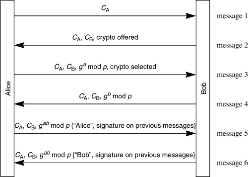

Networking Security Networking Security Networking Security Security Networking Security Networking Security Networking Charlie Kaufman Radia Perlman Mike Speciner Prentice Hall Network Security: Private Communication in a Public World, Second Edition
18.1. Photuris
Photuris was one of the two main candidates for this piece of IPsec (the other being SKIP). Photuris was basically a signed Diffie-Hellman exchange, with identity hiding by first doing an anonymous Diffie-Hellman, and using an initial stateless cookie (see §16.5.1 Cookies). Alice transmits CA, which Photuris calls a cookie, but it's not for the same purpose as Bob's stateless cookie CB. CA is just a way for Alice to keep connection attempts separate, in case she is initiating multiple simultaneous connections to Bob. Messages 3 and 4 consist of the Diffie-Hellman exchange, and the resulting Diffie-Hellman key is used to encrypt the identities in messages 5 and 6. In addition to the identities, the signatures on the previous messages are sent in message 5 and 6.

This is somewhat simplified. There's also crypto parameter negotiation, and choosing of SPI values for each direction. (SPI identifies the SA; see §17.1.1 Security Associations).
CB is for denial of service protection. It is desirable for Bob to be stateless until message 3 (when he knows that Alice can return a valid cookie). The only way he can do this is to reuse his Diffie-Hellman secret number b for many connections. But if he always uses the same b, perfect forward secrecy will be lost. Therefore he should change his b periodically.
|